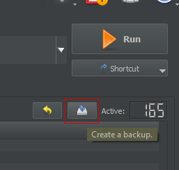
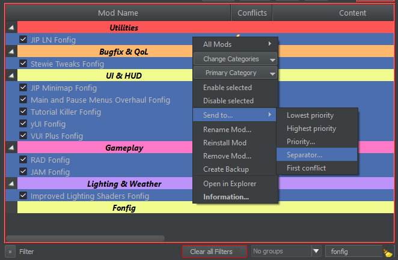

Once the download has finished, click the button at the top of MO2 and select Open Profile folder
Extract the loadorder.txt from the downloaded archive to opened folder and overwrite when prompted
Once the file is extracted, right-click in the left pane of MO2 and select All Mods Refresh
If everything went correctly, the final plugin in MO2's right pane should be DNWeathers.esp (or whatever DC weather mod you chose)
Build the root by clicking the icon and selecting Root Builder Build
Click the Backup button so if something ever goes wrong you can instantly restore this load order:

Fonfig Separator
Create one last separator in MO2 and name it "Fonfig" (or "Config" if you insist)
In the "Filter" box located at the bottom-right corner of the left pane, type "fonfig" to filter the modlist
Quite a few Fonfig files - belonging to several different separators - should appear in the left pane
Hold the Control key and while keeping it held click each fonfig mod - NOT the separators - until they are all selected
With all of the "Fonfig" files now selected, right click any one of them, then click Send to... Separator... as pictured below

Select the Fonfig separator you created in step 1 and you will see the left pane update accordingly - all fonfig files are now together under the new separator
Click to restore the normal view of the left pane
While this process was not strictly necessary, it makes it easier to configure the mods in the guide from one convenient location & teaches you a bit more about how to use the MO2 interface
Controls
A few of the mods in the guide add hotkeys. Let's review them below:
These controls are just the guide defaults, but you can customize all of them in the Mod Configuration Menu or Tweaks Menu
Realtime
Pause Menu
Stewie's Tweaks
M to open the Map
J to open the Quest Journal
JIP Companions Command & Control
C to open the Companion Menu
Mousewheel to scroll through options
Middle mouse button to activate options
Just Assorted Mods
G (hold) to display floating Objectives
H (hold) to open the Weapon Hweel
X to enable Bullet Time (drains AP; meant as VATS alternative)
Shift (hold) to Sprint
L-Alt to Hold Breath
JIP Minimap:
N to enable/disable the minimap
N (hold) to switch between local and world map modes
Stash Organizer:
VATS key on an interior container
Main & Pause Menu Overhaul:
M to show/hide the MCM
N to configure Main & Pause Menu Overhaul
Finishing Notes
Congratulations! You now have a modded Tale of Two Wastelands setup to enjoy. Remember to join the TTW Discord if you have any questions.
Any questions not related to TTW and the guide, or questions about other mods you added that are not in the guide, will not be answered.
 button at the top of MO2 and select Open Profile folder
button at the top of MO2 and select Open Profile folder icon and selecting Root Builder Build
icon and selecting Root Builder Build